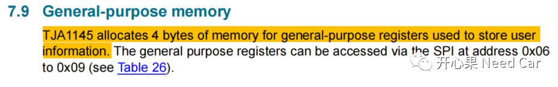
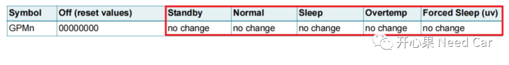
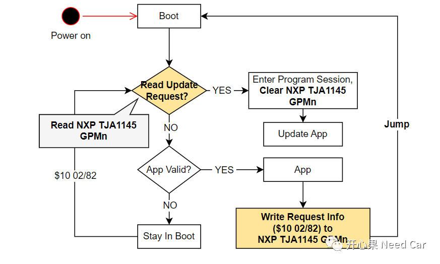

开心果 Need Car · 2022-10-26T10:17:00+08:00 · 微信原文
如何将App诊断请求（$10 02/82）信息"传递"给Boot，前面我们已经讨论了三种方法，可以参考前文Boot开发：App诊断请求（$10 02/82）信息"传递"给Boot方式（三）等。本文接着输出，介绍第四种方式。工程中，大家可以通过前面介绍的几种方式，发散思考，利用这些方式，延申到其他问题的解决上。
将App诊断请求（$10 02/82）信息"传递"给Boot，本文的思路：利用外设模块的User Memory存储App请求信息。这类似Boot开发：App诊断请求（$10 02/82）信息"传递"给Boot方式（一）中介绍的方法，不同点：本文利用外设的寄存器存储诊断请求（$10 02/82）信息，前文介绍的方法是利用uC内部的RSTCON2寄存器。
工程项目中，如果使用了NXP TJA1145收发器，可以利用General-purpose memory区域存储App诊断请求（$10 02/82）信息。General-purpose memory的描述如下所示：

使用NXP TJA1145的General-purpose memory，实质是使用GPMn(n = 0~3)寄存器，该寄存器有什么特点呢？答：NXP TJA1145在非Off模式下，不清零。也就是说，在不断电的情况下，写入到General-purpose memory的数据不清零，如下所示：

我们知道，Transceiver一般与KL30连接，意味着，只要车辆蓄电池不亏电，NXP TJA1145会一直保持在非Off模式，因此，写入到General-purpose memory的数据会一直保持。
流程示意如下：

注意：NXP TJA1145与uC通过SPI通信，如果使用此方式，意味着Boot中需要使能SPI。
除了我介绍的这四种方式，也有人用PFlash存储诊断请求（$10 02/82）信息的做法。不管何种方式，能满足项目的需求就好。
往期精彩回顾